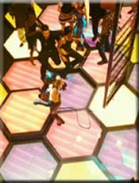
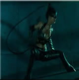
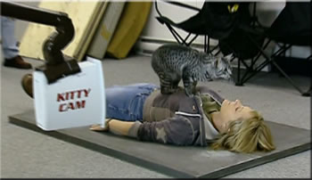
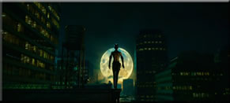

Curiosidades de la película
La vi anunciada en la televisión, y deseaba verla en los cines nada más que saliera. Pero justo salió cuando estaba de vacaciones en Londres, y me decía que nada más que viniera a España tenía que ir a verla en el cine. Cuando llegué, después de un mes, fui a varios cines descubriendo que ya la habían quitado. Me desilusioné un montón pero esperaba con ilusión que pronto saliera en DVD, pasaron como cinco meses y la vi anunciada en la tele su salida a la venta. Fui por muchos centros comerciales en busca de Catwoman pero desafortunadamente no había llegado todavía a aquellos centros. No pasó ni una semana cuando mi padre me la regaló. ¡¡¡Por fin!!! No me lo podía creer, como después de verla, no haya tenido entre comillas tanto éxito en España, si estaba genial la peli, tenía un montón de acción, de amor, de todo un poco. La verdad, si aún no te la has visto te la recomiendo. Te gustará y aquí tienes unas pocas imágenes curiosas de la película Catwoman.

En algunas secuencias de la película, el látigo que Catwoman lleva consigo, mientras se va moviendo, hace el efecto de como si Catwoman tuviese rabo. ¿¿Curioso no??

La interpretación de Halle Berry le dio vida a esta icónica heroína felina.

Tenían un final en un principio para la peli en la que se descubría a la verdadera asesina, cerrándose así los casos, y Patience seguiría junto con el policía. Pero al final optaron por este final en el que se refleja a una Catwoman libre y sin ataduras.

Cuentan que trabajaron más o menos con veinte gatos, y tuvieron que entrenarlos. Y para que estos obedecieran a las reglas del guión, como subirse encima de una persona, acercarse a Halle Berry o ir hacia algún lugar, lo que hacían es atraerlos con sonidos de timbres o campanillas.